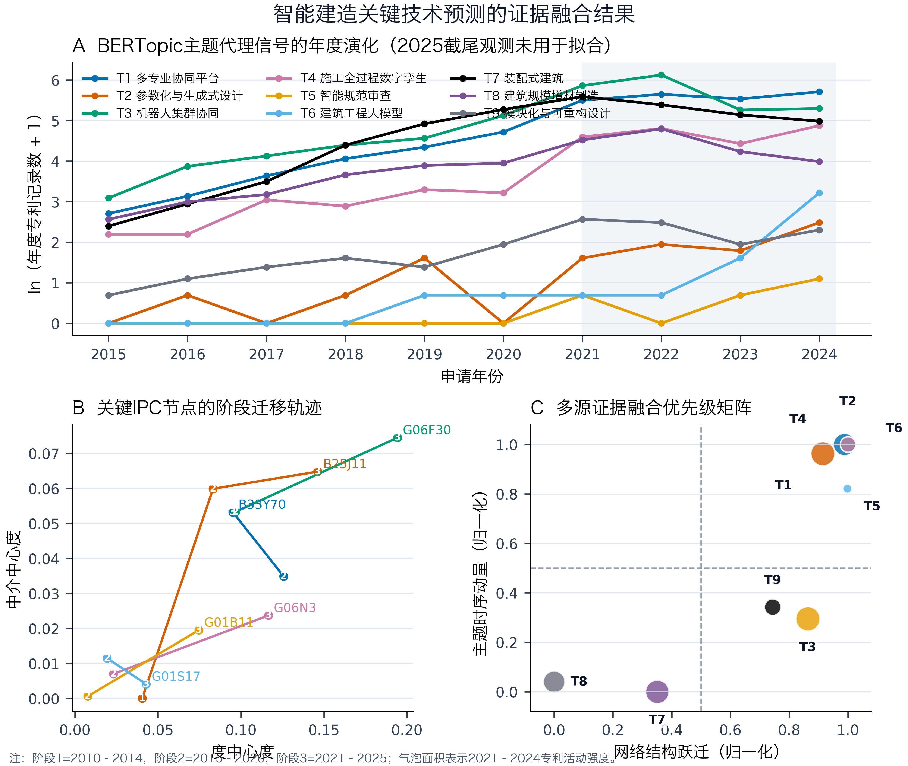
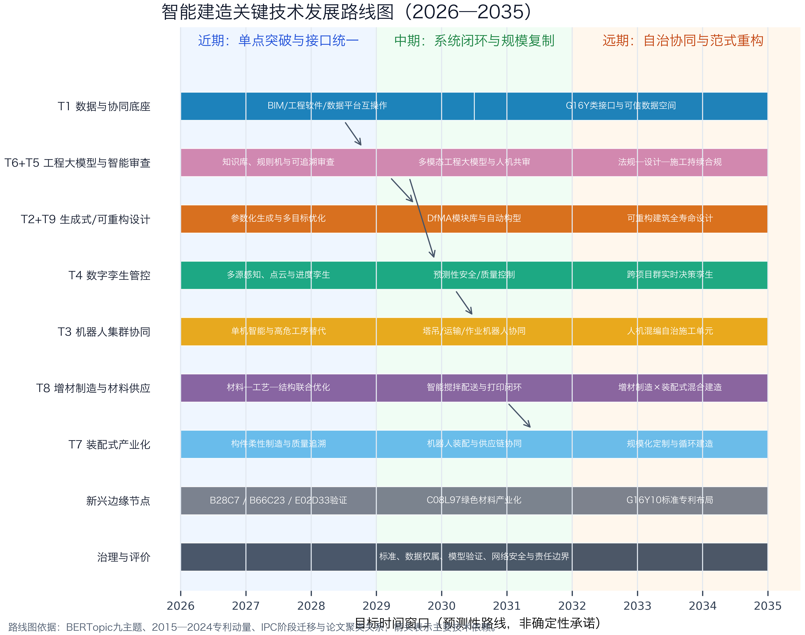

智能建造关键技术预测 | 多源证据融合报告智能建造关键技术预测 | 多源证据融合报告
TECHNOLOGY FORESIGHT REPORT
智能建造领域关键技术预测
基于 BERTopic 主题演化与 IPC 动态网络的多源证据融合
预测窗口：2026—2035年
数据窗口：2010—2025年（2025年为截至10月1日的部分年度）
输出：技术优先级、可检验预测、关键IPC候选与技术发展路线图
研究用途说明
本报告为基于既有论文与本地数据的探索性技术预测，不构成确定性产业承诺。
生成日期：2026年10月15日
摘要
本研究将论文中经优化 BERTopic 得到的九类技术主题，与2015—2024年专利活动时序信号及2010—2025年IPC共现网络的结构迁移联合建模。为控制数据截尾偏差，2025年记录仅用于定性校验，不进入趋势拟合。采用主题动量、近期强度、网络跃迁与聚类融合度四类证据构建综合优先级指数，并在市场牵引、结构跃迁和均衡三种权重情景下进行敏感性检验。
结果显示，施工全过程数字孪生在三种情景下均保持首位；多专业协同平台、建筑工程大模型以及参数化与生成式设计构成第二梯队。IPC网络进一步表明，G06F30、G06N3、B25J11、G01B11与E02D33等节点呈现显著的中心性增长或跨域桥接效应。装配式建筑与建筑规模增材制造的专利基数仍高，但其时序增量趋于平台化，未来的主要价值更可能来自与机器人、数字孪生、智能材料供应和模块化设计的系统融合。基于上述证据，本研究提出2026—2035年三阶段路线：近期实现数据接口统一与单点智能突破，中期构建“规划—执行—管控”闭环，远期形成跨项目群自治协同与可重构建造范式。
关键词：智能建造；技术预测；BERTopic；IPC共现网络；数字孪生；建筑工程大模型；技术路线图
1 研究数据与预测框架
1.1 输入证据与一致性审计
预测仅使用用户提供的三项本地输入：论文初稿中的BERTopic主题与生命周期分析、专利主题时间表、以及IPC动态网络结果。论文报告专利样本为5,926件，而当前Excel含5,913条数据行，存在13条差异；该差异可能来自清洗、去重或版本更新，但现有材料不足以确定原因。为避免人为补齐，本报告将其保留为数据一致性限制。
表1 输入证据与质量控制
证据ID | 输入 | 可用信息 | 处理原则 |
E1 | 论文初稿 | 九个BERTopic主题、模型评价、聚类关系、生命周期与IPC解释 | 按原文提取，不改写原始统计值 |
E2 | 专利时间表 | 5,913条记录；2015—2025阶段标签与申请日 | 2025年作为截尾观测；拟合截至2024年 |
E3 | IPC网络结果 | 阶段1/2/3分别为75、518、979个节点及五类中心性 | 统一IPC格式后计算结构跃迁 |
QC | 版本差异 | 论文5,926件 vs. Excel 5,913条 | 差异13条，列入限制，不推测补齐 |
1.2 BERTopic主题与时间代理
论文中的优化BERTopic模型报告轮廓系数0.682、Calinski–Harabasz指数2896.3；默认参数模型分别为0.415与1245.7。九个主题包括多专业协同平台、参数化与生成式设计、机器人集群协同、施工全过程数字孪生、智能规范审查、建筑工程大模型、装配式建筑、建筑规模增材制造以及模块化与可重构设计。Excel中的既有标签被映射为主题时间代理；其中智能规范审查与模块化/可重构设计缺少专属标签，分别采用可审计的审查/规范词项与模块化/可重构词项作为代理，因此这两类主题的定量置信度较低。
1.3 多源融合评分
综合优先级指数定义为 P = 100 × (0.30M + 0.20I + 0.35N + 0.15C)，其中M为2018—2024年经近期加权的对数动量，I为2021—2024年专利活动强度，N为主题关联IPC节点的中心性水平与阶段跃迁，C为论文层次聚类揭示的融合准备度。各指标经0—1归一化后合成。该指数用于相对排序，不代表技术成功概率。
为检验权重依赖，另外构造市场牵引情景（更强调动量和专利强度）与结构跃迁情景（更强调IPC网络和主题融合）。报告优先采用均衡情景，并同时给出三种情景的名次区间。专利活动量的2026—2030外推采用带衰减的对数线性趋势，输出80%探索性区间；由于检索口径、专利公开滞后和主题代理误差，该区间仅用于监测基线。
2 预测结果

图1 BERTopic主题时间信号、关键IPC节点迁移与多源证据融合优先级
2.1 主题优先级
表2 主题综合优先级与敏感性结果
排名 | BERTopic主题 | 综合指数 | 情景名次 | 年化信号动量 | 2021—2024记录 | 数据置信度 |
1 | T4 施工全过程数字孪生 | 94.8 | 1–1 | 28.4% | 432 | 高 |
2 | T1 多专业协同平台 | 89.8 | 2–4 | 27.2% | 1080 | 高 |
3 | T6 建筑工程大模型 | 85.2 | 2–3 | 28.4% | 30 | 中（大模型样本起步较晚） |
4 | T2 参数化与生成式设计 | 84.4 | 3–4 | 28.4% | 26 | 高 |
5 | T3 机器人集群协同 | 72.7 | 5–6 | 7.5% | 1197 | 高 |
6 | T5 智能规范审查 | 72.5 | 5–6 | 22.8% | 4 | 中（基于审查/规范词项代理） |
7 | T9 模块化与可重构设计 | 56.1 | 7–7 | 8.8% | 38 | 低（基于模块化/可重构词项代理） |
8 | T7 装配式建筑 | 42.5 | 8–8 | -0.1% | 800 | 高 |
9 | T8 建筑规模增材制造 | 24.9 | 9–9 | 0.9% | 332 | 高 |
施工全过程数字孪生（T4）获得94.8分，并在三种情景中均排名第1，表明其优势并非单一权重设定造成。多专业协同平台（T1）、建筑工程大模型（T6）及参数化与生成式设计（T2）在不同情景下位于第2至第4名，构成高潜力融合组。机器人集群协同（T3）具有最大的近期专利活动规模之一，但其增长斜率已由高速扩张转向较稳定的应用深化，因此综合排名处于第5至第6名。
装配式建筑（T7）与建筑规模增材制造（T8）不是“衰退技术”。其较低排名主要源于新增活动趋稳及部分IPC节点的结构跃迁减弱。例如B33Y70的度中心度由阶段2的0.1257降至阶段3的0.0951，而中介中心度由0.0349升至0.0532，说明其正在从快速扩张的独立主题转向跨技术连接与产业化整合。
2.2 可检验的活动量预测
表3 专利活动信号的探索性外推（中位数及80%区间）
主题 | 2026 | 2028 | 2030 | 解释边界 |
T4 施工全过程数字孪生 | 208（124–349） | 299（165–543） | 397（204–773） | 高 |
T1 多专业协同平台 | 473（334–670） | 672（450–1003） | 881（562–1379） | 高 |
T6 建筑工程大模型 | 38（15–97） | 55（19–160） | 73（22–241） | 中（大模型样本起步较晚） |
T2 参数化与生成式设计 | 18（9–34） | 25（12–54） | 34（14–78） | 高 |
T3 机器人集群协同 | 228（115–454） | 254（114–562） | 275（113–670） | 高 |
T7 装配式建筑 | 145（96–219） | 144（89–233） | 144（84–246） | 高 |
T8 建筑规模增材制造 | 54（32–90） | 55（30–99） | 55（28–107） | 高 |
这些数值是基于当前检索与主题代理口径的年度记录信号，不是全球专利族数量。尤其是建筑工程大模型与参数化/生成式设计的基数较小，区间较宽；智能规范审查和模块化/可重构设计因代理样本不足，不宜给出精确数量预测。对论文写作而言，更稳健的表述是“方向及相对优先级预测”，而非单点数量承诺。
2.3 关键IPC节点与技术含义
表4 阶段3关键IPC节点及预测角色
IPC | 技术含义 | 度中心度 | 中介中心度 | 接近中心度 | 预测角色 |
G06F30 | 工程设计三维建模与仿真 | 0.1943 | 0.0745 | 0.4782 | 核心跃迁 |
G06N3 | AI/深度学习算法 | 0.1166 | 0.0237 | 0.4257 | 核心跃迁 |
B25J11 | 建筑机器人操作与机构 | 0.1462 | 0.0648 | 0.4511 | 核心跃迁 |
G01B11 | 三维激光测量 | 0.0746 | 0.0195 | 0.4191 | 使能跃迁 |
G01S17 | 激光雷达定位 | 0.0429 | 0.0041 | 0.3746 | 使能跃迁 |
B28C7 | 智能搅拌与配送 | 0.0164 | 0.0006 | 0.3449 | 边缘候选 |
G06Q50 | 建造过程数字化管理 | 0.1524 | 0.0407 | 0.4437 | 平台核心 |
B66C23 | 智能塔吊与吊装 | 0.0583 | 0.0259 | 0.4065 | 场景枢纽 |
G16Y10 | 建造物联网接口 | 0.0245 | 0.0002 | 0.3462 | 标准候选 |
E02D33 | 地基监测与预警 | 0.0337 | 0.0076 | 0.3761 | 边缘跃迁 |
C08L97 | 生物质增强绿色材料 | 0.0061 | 0.0001 | 0.2716 | 远期前沿 |
3 技术预测结论与机制解释
3.1 首要方向：数字孪生将成为施工智能闭环的控制层
数字孪生的领先并非仅来自文本热度。G06F30在阶段2至阶段3期间，度中心度由0.0967升至0.1943，中介中心度由0.0533升至0.0745；G01B11的度中心度由0.0077升至0.0746；G06N3由0.0232升至0.1166。三类节点分别对应模型底座、现场感知与智能推理，其同步跃迁支持“感知—建模—预测—控制”链条正在成形。预计2026—2028年主要落点是进度、质量、安全和装备状态的单项目孪生；2029—2031年将转向预测性控制；2032年后才可能扩展至跨项目群的实时资源优化。
3.2 第二梯队：平台、大模型与生成式设计将发生耦合增长
T1、T6和T2的共同特征是共享G06F30、G06N3与G06Q50等核心节点。平台层提供可追溯的工程数据和组织协同，大模型层提供知识检索、计划生成与多模态理解，生成式设计层将目标约束转化为可计算方案。短期内，工程大模型更可能以检索增强、规范问答、工艺辅助和风险解释等“受约束助手”形式落地，而不是直接替代责任主体。只有在数据版本、模型来源、规则映射与审计日志形成闭环后，智能审查才可能从辅助核查进入持续合规。
3.3 机器人从单机替代转向多装备协同
B25J11阶段3度中心度达到0.1462、中介中心度达到0.0648，显示机器人技术已进入高连接、高桥接位置；B66C23的度中心度为0.0583、中介中心度为0.0259，体现塔吊和吊装场景的枢纽潜力。未来增长重点不再只是增加机器人品类，而是解决空间定位、任务分配、碰撞规避、设备通信与人机安全边界。预计近期首先在高危、重复和精度敏感工序形成多机协作试点，中期与数字孪生调度融合，远期才可能形成具备自主重规划能力的人机混编施工单元。
3.4 成熟技术的再定位：装配式与增材制造成为融合载体
装配式建筑2021—2024年仍有较高活动规模，但年度记录由267降至145；增材制造同期由91降至53。该变化不应直接解释为技术价值下降，更合理的解释是主题从概念扩散转向工程化筛选和场景整合。未来突破点将集中于三类组合：装配式与机器人装配、增材制造与智能材料配送、以及增材构件与模块化建筑的混合建造。
3.5 边缘技术机会
E02D33的度中心度由阶段2的0.0019升至阶段3的0.0337，且中介中心度升至0.0076，显示地基智能监测与灾害预警具有明确的边缘跃迁特征。G16Y10在阶段3首次进入网络并连接数据处理、通信与设备控制节点，具有接口标准与潜在标准必要专利布局价值。C08L97当前中心性较低，但接近中心度0.2716，适合作为远期绿色材料监测对象。B28C7则可能成为增材制造与现场浇筑之间的材料供应桥梁。
4 技术发展路线图

图2 智能建造关键技术发展路线图（2026—2035）
4.1 近期：2026—2028年
目标是实现可验证的单点突破和数据接口统一。优先建设BIM/工程软件/现场物联网的可追溯数据链；将大模型限制在知识检索、规则解释和人机共审；以数字孪生连接施工监测、进度和质量数据；在塔吊、运输、检测、喷涂等高危或重复工序开展机器人协同试点。同时，对B28C7、B66C23和E02D33开展场景验证，以可量化的安全、精度、工期和能耗指标作为准入门槛。
4.2 中期：2029—2031年
目标是形成“规划—执行—管控”的系统闭环并跨项目复制。工程大模型生成受约束任务或方案，机器人与智能装备执行，数字孪生回传状态并触发调整。参数化设计与DfMA模块库联动，装配式供应链与机器人装配同步优化；智能搅拌、配送与打印设备实现材料—工艺闭环。该阶段的关键不是单项算法性能，而是接口标准、模型验证、故障降级和责任追踪。
4.3 远期：2032—2035年
目标是形成跨项目群自治协同与可重构建造范式。数据底座逐步演化为可信工程数据空间，G16Y类接口标准成为设备互操作基础；工程大模型与持续合规系统贯穿设计、施工和运维；多装备系统具备动态重规划能力；可重构模块和增材—装配混合建造支持规模化定制与循环利用。该阶段受法规责任、数据治理与系统安全约束最大，应以受控自治而非完全无人化作为合理目标。
5 监测指标与证伪条件
技术预测应被视为可更新假设。若后续数据不能满足以下监测条件，应下调相应路线的优先级或延后时间窗口。
表5 路线图的年度监测指标
方向 | 领先指标 | 支持信号 | 证伪/降级条件 |
数字孪生 | G06F30/G01B11/G01S17共现；闭环控制项目数 | 连续两年中心性与项目复用上升 | 只做可视化、无控制闭环；中心性持续下降 |
工程大模型 | 工程数据集、RAG命中率、审查可追溯率 | 跨阶段复用且错误可定位 | 幻觉率高、无法审计、责任边界不清 |
生成式设计 | 约束满足率、方案采纳率、设计周期 | 从演示转为工程交付 | 采纳率长期低或需大量人工返工 |
机器人集群 | 协同任务数、停机率、单位工序成本 | 多设备协调优于单机 | 接口割裂或安全事件频发 |
智能审查 | 规则覆盖率、误报漏报、人工复核量 | 规则/模型双路径可解释 | 缺少法定认可或漏报不可控 |
增材×装配 | 材料闭环控制、构件合格率、混合工法项目 | 形成稳定工程标准 | 成本/质量不优于传统方案 |
新兴IPC | 节点中心性、跨簇连接、标准提案 | 由边缘进入核心或标准网络 | 连续两个阶段保持孤立且无场景验证 |
6 讨论与局限
本研究的主要贡献在于把主题语义、时间动量和网络结构放入同一预测框架，从而避免仅凭高频词或单一中心性判断技术前景。主题聚类揭示技术功能结构，时间序列描述活动变化，IPC网络反映知识组合与桥接位置；三者一致时，预测可信度相对更高。
局限性主要包括：第一，Excel记录与论文样本数存在13条差异；第二，2025年为部分年度且可能受到专利公开滞后影响；第三，时间标签来自检索词集合，不等同于BERTopic逐文档主题概率；第四，T5与T9使用词项代理，样本量小；第五，IPC网络中心性反映结构位置，不直接等同于市场规模、技术成熟度或社会收益；第六，外推模型未引入宏观政策、资本投入、成本曲线和专家德尔菲结果。因此，结果适合用于技术监测与优先级讨论，不宜解释为确定性预测。
7 结论
综合证据支持以下主结论：未来十年智能建造的主线不是单项技术独立扩张，而是由数据协同底座、工程大模型、数字孪生和机器人共同形成可验证的闭环系统。施工全过程数字孪生是最稳定的首要方向；多专业协同平台、建筑工程大模型和参数化/生成式设计构成高潜力融合组；机器人集群协同将由单机替代转向多装备协作；装配式建筑与增材制造将从独立热点转向融合载体。E02D33、G16Y10、B28C7、B66C23与C08L97值得建立持续监测清单。
据此，研发与政策资源应优先投向接口标准、可信数据、模型验证、现场闭环和安全治理，而不是单纯追求模型规模或设备数量。路线实施应采用“年度更新—场景验证—证伪调整”的滚动机制，以中心性迁移、项目复用、经济性和安全性共同校正预测。
附录A 年度主题代理计数
主题 | 2015 | 2016 | 2017 | 2018 | 2019 | 2020 | 2021 | 2022 | 2023 | 2024 |
T1 多专业协同平台 | 14 | 22 | 37 | 57 | 76 | 111 | 244 | 283 | 252 | 301 |
T2 参数化与生成式设计 | 0 | 1 | 0 | 1 | 4 | 0 | 4 | 6 | 5 | 11 |
T3 机器人集群协同 | 21 | 47 | 61 | 80 | 95 | 167 | 350 | 456 | 192 | 199 |
T4 施工全过程数字孪生 | 8 | 8 | 20 | 17 | 26 | 24 | 98 | 121 | 83 | 130 |
T5 智能规范审查 | 0 | 0 | 0 | 0 | 0 | 0 | 1 | 0 | 1 | 2 |
T6 建筑工程大模型 | 0 | 0 | 0 | 0 | 1 | 1 | 1 | 1 | 4 | 24 |
T7 装配式建筑 | 10 | 18 | 32 | 80 | 136 | 194 | 267 | 218 | 170 | 145 |
T8 建筑规模增材制造 | 12 | 19 | 23 | 38 | 48 | 51 | 91 | 120 | 68 | 53 |
T9 模块化与可重构设计 | 1 | 2 | 3 | 4 | 3 | 6 | 12 | 11 | 6 | 9 |
注：2025年为截尾观测，未列入本表的完整年度比较；T5与T9为词项代理。
附录B 证据追溯与方法说明
E1：论文初稿《基于动态演化的智能建造领域关键技术识别及预测》，用于BERTopic主题、聚类关系、生命周期与IPC解释。E2：专利主题时间表，用于申请年、检索标签与主题代理时序。E3：IPCnetwork结果，用于三个阶段的Degree、Betweenness、Closeness、Eigenvector与Eccentricity指标。所有材料均在本地处理，未上传外部服务。
方法程序化规范参考：Kassis, T., Agarwal, V., He, Y., Patel, D., & Brueckner, A. M. (2026). Scientific Agent Skills: A Library of Procedural Knowledge for Research Agents. arXiv:2609.00065. https://doi.org/10.48550/arXiv.2609.00065。该文献仅说明科学写作与可视化流程规范，不作为本报告技术预测结论的外部证据。